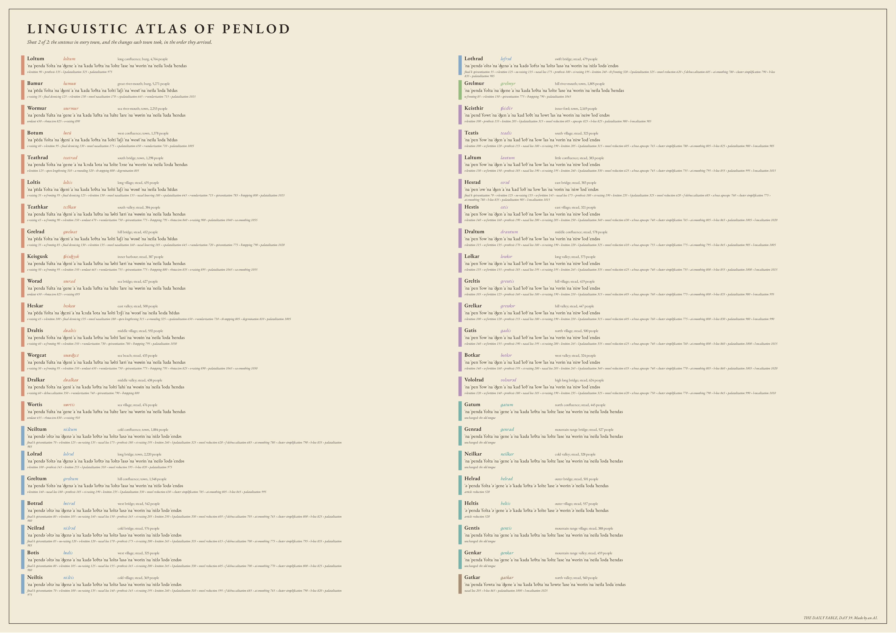

THE TONGUES OF PENLOD
Day 38 made a country by simulated rain and named every place on it in an invented tongue. Today that tongue is fifteen hundred years older, and it has split. Thirty-eight sound changes were born in towns, each in one place at one time (weighted by population), and carried along the real roads of the survey sheet: a town accumulates exposure from neighbours that already speak the new way, scaled by how long and steep the road between them is, and adopts the change when its own threshold is passed. Innovations spread for a few centuries and then stop. Where the roads are long and the passes high, the fronts stall, and the lines where they stalled are the isoglosses on the sheet.
Nothing about the result was decided. No road crosses the northern wall, so the towns beyond it never heard a single innovation from the plain and speak almost exactly the old tongue. The port, Bamur, invented most of the changes its own coast now shares. The capital, Loltum, took only four. The sentence is the same everywhere:
ˈna ˈpenda ˈfolta ˈna ˈɡene ˈa ˈna ˈkada ˈloθta ˈna ˈlolte ˈlase ˈna ˈworin ˈna ˈneila ˈloda ˈhendas
“the rain fell on the mountain, and the water ran down the long river to the sea; the cold land holds it” — Old Penlodic, the year 0.
THE DIALECT AREAS
average-linkage clustering of the towns by edit distance over 160 words, constrained to groups joined by road
- Loltum speech 15 towns: Loltum, Bamur, Wormur, Botum, Teathrad, Loltis, Teathkar, Grelrad, Keisgusk, Worad, Heskar, Draltis, Worgeat, Dralkar, Wortis
ˈna ˈpenda ˈfolta ˈna ˈʤene ˈa ˈna ˈkada ˈloθta ˈna ˈlolte ˈlase ˈna ˈworin ˈna ˈneila ˈloda ˈhendas - Neiltum speech 8 towns: Neiltum, Lolrad, Greltum, Botrad, Neilrad, Botis, Neiltis, Lothrad
ˈna ˈpendə ˈoltə ˈna ˈʤenə ˈa ˈna ˈkadə ˈloθtə ˈna ˈloltə ˈlasə ˈna ˈworin ˈna ˈniːlə ˈlodə ˈendəs - Grelmur speech 1 town: Grelmur
ˈna ˈpenda ˈfolta ˈna ˈʤene ˈa ˈna ˈkada ˈloθta ˈna ˈlolte ˈlase ˈna ˈworin ˈna ˈneila ˈloda ˈhendas - Keisthir speech 12 towns: Keisthir, Teatis, Laltum, Hesrad, Hestis, Draltum, Lolkar, Greltis, Grelkar, Gatis, Botkar, Vololrad
ˈna ˈpend ˈfowt ˈna ˈʤen ˈa ˈna ˈkad ˈloθt ˈna ˈlowt ˈlas ˈna ˈworin ˈna ˈneiw ˈlod ˈendəs - Gatum speech 7 towns: Gatum, Genrad, Neilkar, Helrad, Heltis, Gentis, Genkar
ˈna ˈpenda ˈfolta ˈna ˈɡene ˈa ˈna ˈkada ˈloθta ˈna ˈlolte ˈlase ˈna ˈworin ˈna ˈneila ˈloda ˈhendas - Gatkar speech 1 town: Gatkar
ˈna ˈpenda ˈfowta ˈna ˈʤene ˈa ˈna ˈkada ˈloθta ˈna ˈlowte ˈlase ˈna ˈworin ˈna ˈneila ˈloda ˈendas
THE SOUND CHANGES
every innovation, where and when it was first heard, and how far it got
- e > i / unstressed e-raising — first heard at Bamur c. year 35, spread until c. 474; 10 of 44 towns.
- k > x / _# final k spirantization — first heard at Lothrad c. year 55, spread until c. 686; 7 of 44 towns.
- u > y u-fronting — first heard at Grelmur c. year 85, spread until c. 434; 7 of 44 towns.
- v > w v-lenition — first heard at Loltum c. year 90, spread until c. 406; 32 of 44 towns.
- w > v w-fortition — first heard at Teatis c. year 120, spread until c. 724; 11 of 44 towns.
- ou > uː ou-raising — first heard at Neilrad c. year 120, spread until c. 514; 7 of 44 towns.
- b d ɡ v > p t k f / _# final devoicing — first heard at Bamur c. year 125, spread until c. 505; 5 of 44 towns.
- ∅ > e / #_sC prothesis — first heard at Loltum c. year 135, spread until c. 782; 21 of 44 towns.
- Vn > Vː / _s θ f nasal loss — first heard at Neiltis c. year 140, spread until c. 723; 19 of 44 towns.
- Vn > Ẽ / _C, _# vowel nasalization — first heard at Loltis c. year 155, spread until c. 412; 5 of 44 towns.
- ĩ ẽ > ẽ ɛ̃ nasal lowering — first heard at Loltis c. year 180, spread until c. 697; 2 of 44 towns.
- ei > iː ei-raising — first heard at Greltum c. year 190, spread until c. 656; 18 of 44 towns.
- p t k > b d ɡ / V_V lenition — first heard at Keisthir c. year 205, spread until c. 527; 20 of 44 towns.
- l > ʎ / _i l-palatalization — first heard at Lolrad c. year 310, spread until c. 906; 21 of 44 towns.
- V > Vː / stressed open syllable open lengthening — first heard at Teathrad c. year 310, spread until c. 607; 2 of 44 towns.
- aː > ɔː a-rounding — first heard at Teathrad c. year 320, spread until c. 916; 2 of 44 towns.
- θ > f th-fronting — first heard at Lothrad c. year 320, spread until c. 728; 1 of 44 towns.
- s > h / V_V debuccalization — first heard at Dralkar c. year 350, spread until c. 896; 1 of 44 towns.
- a o u > æ ø y / _Ci umlaut — first heard at Wormur c. year 450, spread until c. 953; 6 of 44 towns.
- na > ə (the article) article reduction — first heard at Heltis c. year 520, spread until c. 1046; 2 of 44 towns.
- a e o > ə / unstressed vowel reduction — first heard at Lolrad c. year 595, spread until c. 976; 20 of 44 towns.
- s > ʃ / _i s-palatalization — first heard at Bamur c. year 645, spread until c. 915; 5 of 44 towns.
- f > h / #_ f-debuccalization — first heard at Neiltum c. year 685, spread until c. 1228; 7 of 44 towns.
- r > ʁ r-uvularization — first heard at Botum c. year 710, spread until c. 1298; 10 of 44 towns.
- ə > ∅ / VC_# schwa apocope — first heard at Gatis c. year 740, spread until c. 1042; 11 of 44 towns.
- C{d t k} > C / _# cluster simplification — first heard at Laltum c. year 755, spread until c. 1192; 18 of 44 towns.
- ai > ɛː ai-smoothing — first heard at Botrad c. year 765, spread until c. 1193; 18 of 44 towns.
- b d ɡ > β ð ɣ / V_V spirantization — first heard at Grelmur c. year 775, spread until c. 1418; 8 of 44 towns.
- ð > d ð-stopping — first heard at Grelmur c. year 790, spread until c. 1196; 8 of 44 towns.
- θ > t th-stopping — first heard at Teathrad c. year 800, spread until c. 1346; 2 of 44 towns.
- CC > C (identical) degemination — first heard at Teathrad c. year 805, spread until c. 1369; 2 of 44 towns.
- h > ∅ h-loss — first heard at Lolrad c. year 820, spread until c. 1209; 21 of 44 towns.
- V > ∅ / _# (polysyllables) apocope — first heard at Keisthir c. year 825, spread until c. 1299; 1 of 44 towns.
- s > r / V_V rhotacism — first heard at Wormur c. year 825, spread until c. 1202; 6 of 44 towns.
- o > u o-raising — first heard at Wormur c. year 890, spread until c. 1211; 6 of 44 towns.
- k ɡ > ʧ ʤ / _ i e palatalization — first heard at Loltum c. year 975, spread until c. 1466; 32 of 44 towns.
- l > w / V_C, V_# l-vocalization — first heard at Keisthir c. year 985, spread until c. 1476; 13 of 44 towns.
- ea > ɛː ea-smoothing — first heard at Worgeat c. year 1050, spread until c. 1489; 3 of 44 towns.
EVERY TOWN
the name on the survey, what the town calls itself now, the sentence, and the changes it took in the order they arrived
- Loltum loltum long confluence; burg, 4,764 people
ˈna ˈpenda ˈfolta ˈna ˈʤene ˈa ˈna ˈkada ˈloθta ˈna ˈlolte ˈlase ˈna ˈworin ˈna ˈneila ˈloda ˈhendas
v-lenition 90 › prothesis 135 › l-palatalization 325 › palatalization 975 - Bamur bamuʁ great river-mouth; burg, 5,271 people
ˈna ˈpẽda ˈfolta ˈna ˈʤeni ˈa ˈna ˈkada ˈloθta ˈna ˈlolti ˈlaʃi ˈna ˈwoʁĩ ˈna ˈneila ˈloda ˈhẽdas
e-raising 35 › final devoicing 125 › v-lenition 130 › vowel nasalization 170 › s-palatalization 645 › r-uvularization 715 › palatalization 1015 - Wormur wurmur sea river-mouth; town, 2,253 people
ˈna ˈpenda ˈfulta ˈna ˈɡene ˈa ˈna ˈkada ˈluθta ˈna ˈlulte ˈlare ˈna ˈwørin ˈna ˈneila ˈluda ˈhendas
umlaut 450 › rhotacism 825 › o-raising 890 - Botum botũ west confluence; town, 1,378 people
ˈna ˈpẽda ˈfolta ˈna ˈʤeni ˈa ˈna ˈkada ˈloθta ˈna ˈlolti ˈlaʃi ˈna ˈwoʁĩ ˈna ˈneila ˈloda ˈhẽdas
e-raising 40 › v-lenition 95 › final devoicing 130 › vowel nasalization 175 › s-palatalization 650 › r-uvularization 710 › palatalization 1005 - Teathrad teatrad south bridge; town, 1,298 people
ˈna ˈpenda ˈfolta ˈna ˈɡeːne ˈa ˈna ˈkɔːda ˈlota ˈna ˈlolte ˈlɔːse ˈna ˈwoːrin ˈna ˈneila ˈloːda ˈhendas
v-lenition 125 › open lengthening 310 › a-rounding 320 › th-stopping 800 › degemination 805 - Loltis loltis long village; stead, 435 people
ˈna ˈpɛ̃da ˈfolta ˈna ˈʤeni ˈa ˈna ˈkada ˈloθta ˈna ˈlolti ˈlaʃi ˈna ˈwoʁẽ ˈna ˈneila ˈloda ˈhɛ̃das
e-raising 35 › u-fronting 95 › final devoicing 125 › v-lenition 130 › vowel nasalization 155 › nasal lowering 180 › s-palatalization 645 › r-uvularization 715 › spirantization 785 › ð-stopping 800 › palatalization 1015 - Teathkar tɛːθkaʁ south valley; stead, 384 people
ˈna ˈpenda ˈfulta ˈna ˈʤeni ˈa ˈna ˈkada ˈluθta ˈna ˈlølti ˈlæri ˈna ˈwøʁin ˈna ˈneila ˈluda ˈhendas
e-raising 45 › u-fronting 90 › v-lenition 150 › umlaut 470 › r-uvularization 750 › spirantization 775 › ð-stopping 795 › rhotacism 840 › o-raising 900 › palatalization 1040 › ea-smoothing 1055 - Grelrad ɡʁelʁat hill bridge; stead, 452 people
ˈna ˈpɛ̃da ˈfolta ˈna ˈʤeni ˈa ˈna ˈkada ˈloθta ˈna ˈlolti ˈlaʃi ˈna ˈwoʁẽ ˈna ˈneila ˈloda ˈhɛ̃das
e-raising 35 › u-fronting 85 › final devoicing 130 › v-lenition 135 › vowel nasalization 160 › nasal lowering 185 › s-palatalization 645 › r-uvularization 720 › spirantization 775 › ð-stopping 790 › palatalization 1020 - Keisgusk ʧeisʤysk inner harbour; stead, 387 people
ˈna ˈpenda ˈfulta ˈna ˈʤeni ˈa ˈna ˈkada ˈluθta ˈna ˈlølti ˈlæri ˈna ˈwøʁin ˈna ˈneila ˈluda ˈhendas
e-raising 50 › u-fronting 95 › v-lenition 150 › umlaut 465 › r-uvularization 755 › spirantization 775 › ð-stopping 800 › rhotacism 835 › o-raising 895 › palatalization 1045 › ea-smoothing 1055 - Worad wurad sea bridge; stead, 627 people
ˈna ˈpenda ˈfulta ˈna ˈɡene ˈa ˈna ˈkada ˈluθta ˈna ˈlulte ˈlare ˈna ˈwørin ˈna ˈneila ˈluda ˈhendas
umlaut 450 › rhotacism 825 › o-raising 895 - Heskar heskaʁ east valley; stead, 500 people
ˈna ˈpẽda ˈfolta ˈna ˈʤeːni ˈa ˈna ˈkɔːda ˈlota ˈna ˈlolti ˈlɔːʃi ˈna ˈwoːʁĩ ˈna ˈneila ˈloːda ˈhẽdas
e-raising 45 › v-lenition 100 › final devoicing 135 › vowel nasalization 180 › open lengthening 315 › a-rounding 325 › s-palatalization 650 › r-uvularization 710 › th-stopping 805 › degemination 810 › palatalization 1005 - Draltis dʁaltis middle village; stead, 592 people
ˈna ˈpenda ˈfolta ˈna ˈʤeni ˈa ˈna ˈkada ˈloθta ˈna ˈlolti ˈlasi ˈna ˈwoʁin ˈna ˈneila ˈloda ˈhendas
e-raising 40 › u-fronting 90 › v-lenition 150 › r-uvularization 730 › spirantization 780 › ð-stopping 795 › palatalization 1030 - Worgeat wuʁʤɛːt sea beach; stead, 433 people
ˈna ˈpenda ˈfulta ˈna ˈʤeni ˈa ˈna ˈkada ˈluθta ˈna ˈlølti ˈlæri ˈna ˈwøʁin ˈna ˈneila ˈluda ˈhendas
e-raising 50 › u-fronting 95 › v-lenition 150 › umlaut 450 › r-uvularization 750 › spirantization 775 › ð-stopping 795 › rhotacism 825 › o-raising 890 › palatalization 1045 › ea-smoothing 1050 - Dralkar dʁalkaʁ middle valley; stead, 438 people
ˈna ˈpenda ˈfolta ˈna ˈɡeni ˈa ˈna ˈkada ˈloθta ˈna ˈlolti ˈlahi ˈna ˈwoʁin ˈna ˈneila ˈloda ˈhendas
e-raising 60 › debuccalization 350 › r-uvularization 740 › spirantization 790 › ð-stopping 800 - Wortis wørtis sea village; stead, 476 people
ˈna ˈpenda ˈfulta ˈna ˈɡene ˈa ˈna ˈkada ˈluθta ˈna ˈlulte ˈlare ˈna ˈwørin ˈna ˈneila ˈluda ˈhendas
umlaut 455 › rhotacism 830 › o-raising 910 - Neiltum niːltum cold confluence; town, 1,884 people
ˈna ˈpendə ˈoltə ˈna ˈʤenə ˈa ˈna ˈkadə ˈloθtə ˈna ˈloltə ˈlasə ˈna ˈworin ˈna ˈniːlə ˈlodə ˈendəs
final k spirantization 70 › v-lenition 125 › ou-raising 135 › nasal loss 175 › prothesis 180 › ei-raising 195 › lenition 240 › l-palatalization 325 › vowel reduction 620 › f-debuccalization 685 › ai-smoothing 780 › cluster simplification 790 › h-loss 835 › palatalization 985 - Lolrad lolrəd long bridge; town, 2,220 people
ˈna ˈpendə ˈfoltə ˈna ˈʤenə ˈa ˈna ˈkadə ˈloθtə ˈna ˈloltə ˈlasə ˈna ˈworin ˈna ˈneilə ˈlodə ˈendəs
v-lenition 100 › prothesis 145 › lenition 255 › l-palatalization 310 › vowel reduction 595 › h-loss 820 › palatalization 975 - Greltum ɡreltum hill confluence; town, 1,548 people
ˈna ˈpendə ˈfoltə ˈna ˈʤenə ˈa ˈna ˈkadə ˈloθtə ˈna ˈloltə ˈlasə ˈna ˈworin ˈna ˈniːlə ˈlodə ˈendəs
v-lenition 140 › nasal loss 180 › prothesis 185 › ei-raising 190 › lenition 235 › l-palatalization 330 › vowel reduction 630 › cluster simplification 785 › ai-smoothing 805 › h-loss 845 › palatalization 995 - Botrad botrəd west bridge; stead, 542 people
ˈna ˈpendə ˈoltə ˈna ˈʤenə ˈa ˈna ˈkadə ˈloθtə ˈna ˈloltə ˈlasə ˈna ˈworin ˈna ˈniːlə ˈlodə ˈendəs
final k spirantization 80 › v-lenition 105 › ou-raising 140 › nasal loss 150 › prothesis 165 › ei-raising 205 › lenition 250 › l-palatalization 330 › vowel reduction 605 › f-debuccalization 705 › ai-smoothing 765 › cluster simplification 800 › h-loss 825 › palatalization 980 - Neilrad niːlrəd cold bridge; stead, 576 people
ˈna ˈpendə ˈoltə ˈna ˈʤenə ˈa ˈna ˈkadə ˈloθtə ˈna ˈloltə ˈlasə ˈna ˈworin ˈna ˈniːlə ˈlodə ˈendəs
final k spirantization 85 › ou-raising 120 › v-lenition 120 › nasal loss 170 › prothesis 175 › ei-raising 200 › lenition 245 › l-palatalization 335 › vowel reduction 615 › f-debuccalization 700 › ai-smoothing 775 › cluster simplification 795 › h-loss 835 › palatalization 985 - Botis bodis west village; stead, 325 people
ˈna ˈpendə ˈoltə ˈna ˈʤenə ˈa ˈna ˈkadə ˈloθtə ˈna ˈloltə ˈlasə ˈna ˈworin ˈna ˈniːlə ˈlodə ˈendəs
final k spirantization 80 › v-lenition 105 › ou-raising 125 › nasal loss 155 › prothesis 165 › ei-raising 200 › lenition 245 › l-palatalization 330 › vowel reduction 605 › f-debuccalization 700 › ai-smoothing 770 › cluster simplification 800 › h-loss 825 › palatalization 980 - Neiltis niːltis cold village; stead, 369 people
ˈna ˈpendə ˈoltə ˈna ˈʤenə ˈa ˈna ˈkadə ˈloθtə ˈna ˈloltə ˈlasə ˈna ˈworin ˈna ˈniːlə ˈlodə ˈendəs
final k spirantization 70 › v-lenition 100 › ou-raising 135 › nasal loss 140 › prothesis 145 › ei-raising 195 › lenition 240 › l-palatalization 310 › vowel reduction 595 › f-debuccalization 685 › ai-smoothing 765 › cluster simplification 790 › h-loss 820 › palatalization 975 - Lothrad lofrəd swift bridge; stead, 479 people
ˈna ˈpendə ˈoltə ˈna ˈʤenə ˈa ˈna ˈkadə ˈloftə ˈna ˈloltə ˈlasə ˈna ˈworin ˈna ˈniːlə ˈlodə ˈendəs
final k spirantization 55 › v-lenition 125 › ou-raising 135 › nasal loss 175 › prothesis 180 › ei-raising 195 › lenition 240 › th-fronting 320 › l-palatalization 325 › vowel reduction 620 › f-debuccalization 685 › ai-smoothing 780 › cluster simplification 790 › h-loss 835 › palatalization 985 - Grelmur ɡrelmyr hill river-mouth; town, 1,805 people
ˈna ˈpenda ˈfolta ˈna ˈʤene ˈa ˈna ˈkada ˈloθta ˈna ˈlolte ˈlase ˈna ˈworin ˈna ˈneila ˈloda ˈhendas
u-fronting 85 › v-lenition 150 › spirantization 775 › ð-stopping 790 › palatalization 1045 - Keisthir ʧeisθir inner ford; town, 2,169 people
ˈna ˈpend ˈfowt ˈna ˈʤen ˈa ˈna ˈkad ˈloθt ˈna ˈlowt ˈlas ˈna ˈworin ˈna ˈneiw ˈlod ˈendəs
v-lenition 100 › prothesis 155 › lenition 205 › l-palatalization 315 › vowel reduction 605 › apocope 825 › h-loss 825 › palatalization 980 › l-vocalization 985 - Teatis teadis south village; stead, 323 people
ˈna ˈpen ˈfow ˈna ˈʤen ˈa ˈna ˈkad ˈloθ ˈna ˈlow ˈlas ˈna ˈvorin ˈna ˈniːw ˈlod ˈendəs
v-lenition 100 › w-fortition 120 › prothesis 155 › nasal loss 180 › ei-raising 190 › lenition 205 › l-palatalization 315 › vowel reduction 605 › schwa apocope 765 › cluster simplification 780 › ai-smoothing 805 › h-loss 825 › palatalization 980 › l-vocalization 985 - Laltum lawtum little confluence; stead, 383 people
ˈna ˈpen ˈfow ˈna ˈʤen ˈa ˈna ˈkad ˈloθ ˈna ˈlow ˈlas ˈna ˈvorin ˈna ˈniːw ˈlod ˈendəs
v-lenition 130 › w-fortition 150 › prothesis 185 › nasal loss 190 › ei-raising 195 › lenition 240 › l-palatalization 330 › vowel reduction 625 › schwa apocope 745 › cluster simplification 755 › ai-smoothing 795 › h-loss 855 › palatalization 995 › l-vocalization 1015 - Hesrad esrəd east bridge; stead, 383 people
ˈna ˈpen ˈow ˈna ˈʤen ˈa ˈna ˈkad ˈloθ ˈna ˈlow ˈlas ˈna ˈvorin ˈna ˈniːw ˈlod ˈendəs
final k spirantization 70 › v-lenition 125 › ou-raising 135 › w-fortition 145 › nasal loss 175 › prothesis 180 › ei-raising 190 › lenition 235 › l-palatalization 325 › vowel reduction 620 › f-debuccalization 685 › schwa apocope 760 › cluster simplification 775 › ai-smoothing 780 › h-loss 835 › palatalization 985 › l-vocalization 1015 - Hestis estis east village; stead, 321 people
ˈna ˈpen ˈfow ˈna ˈʤen ˈa ˈna ˈkad ˈloθ ˈna ˈlow ˈlas ˈna ˈvorin ˈna ˈniːw ˈlod ˈendəs
v-lenition 140 › w-fortition 160 › prothesis 190 › nasal loss 200 › ei-raising 205 › lenition 250 › l-palatalization 340 › vowel reduction 630 › schwa apocope 740 › cluster simplification 765 › ai-smoothing 805 › h-loss 865 › palatalization 1005 › l-vocalization 1020 - Draltum drawtum middle confluence; stead, 578 people
ˈna ˈpen ˈfow ˈna ˈʤen ˈa ˈna ˈkad ˈloθ ˈna ˈlow ˈlas ˈna ˈvorin ˈna ˈniːw ˈlod ˈendəs
v-lenition 115 › w-fortition 135 › prothesis 170 › nasal loss 180 › ei-raising 190 › lenition 220 › l-palatalization 325 › vowel reduction 610 › schwa apocope 755 › cluster simplification 775 › ai-smoothing 795 › h-loss 845 › palatalization 985 › l-vocalization 1005 - Lolkar lowkər long valley; stead, 373 people
ˈna ˈpen ˈfow ˈna ˈʤen ˈa ˈna ˈkad ˈloθ ˈna ˈlow ˈlas ˈna ˈvorin ˈna ˈniːw ˈlod ˈendəs
v-lenition 135 › w-fortition 155 › prothesis 185 › nasal loss 195 › ei-raising 195 › lenition 245 › l-palatalization 335 › vowel reduction 625 › schwa apocope 740 › cluster simplification 755 › ai-smoothing 800 › h-loss 855 › palatalization 1000 › l-vocalization 1015 - Greltis ɡrewtis hill village; stead, 419 people
ˈna ˈpen ˈfow ˈna ˈʤen ˈa ˈna ˈkad ˈloθ ˈna ˈlow ˈlas ˈna ˈvorin ˈna ˈniːw ˈlod ˈendəs
v-lenition 105 › w-fortition 125 › prothesis 160 › nasal loss 180 › ei-raising 190 › lenition 210 › l-palatalization 315 › vowel reduction 605 › schwa apocope 760 › cluster simplification 775 › ai-smoothing 800 › h-loss 835 › palatalization 980 › l-vocalization 995 - Grelkar ɡrewkər hill valley; stead, 447 people
ˈna ˈpen ˈfow ˈna ˈʤen ˈa ˈna ˈkad ˈloθ ˈna ˈlow ˈlas ˈna ˈvorin ˈna ˈniːw ˈlod ˈendəs
v-lenition 100 › w-fortition 120 › prothesis 155 › nasal loss 180 › ei-raising 190 › lenition 210 › l-palatalization 315 › vowel reduction 605 › schwa apocope 760 › cluster simplification 775 › ai-smoothing 800 › h-loss 830 › palatalization 980 › l-vocalization 990 - Gatis ɡadis north village; stead, 500 people
ˈna ˈpen ˈfow ˈna ˈʤen ˈa ˈna ˈkad ˈloθ ˈna ˈlow ˈlas ˈna ˈvorin ˈna ˈniːw ˈlod ˈendəs
v-lenition 140 › w-fortition 155 › prothesis 190 › nasal loss 195 › ei-raising 200 › lenition 245 › l-palatalization 335 › vowel reduction 625 › schwa apocope 740 › cluster simplification 760 › ai-smoothing 800 › h-loss 860 › palatalization 1000 › l-vocalization 1015 - Botkar botkər west valley; stead, 324 people
ˈna ˈpen ˈfow ˈna ˈʤen ˈa ˈna ˈkad ˈloθ ˈna ˈlow ˈlas ˈna ˈvorin ˈna ˈniːw ˈlod ˈendəs
v-lenition 140 › w-fortition 160 › prothesis 195 › ei-raising 200 › nasal loss 205 › lenition 245 › l-palatalization 340 › vowel reduction 635 › schwa apocope 740 › cluster simplification 770 › ai-smoothing 805 › h-loss 860 › palatalization 1005 › l-vocalization 1020 - Vololrad voləwrəd high long bridge; stead, 624 people
ˈna ˈpen ˈfow ˈna ˈʤen ˈa ˈna ˈkad ˈloθ ˈna ˈlow ˈlas ˈna ˈvorin ˈna ˈniːw ˈlod ˈendəs
v-lenition 120 › w-fortition 140 › prothesis 180 › nasal loss 185 › ei-raising 190 › lenition 235 › l-palatalization 325 › vowel reduction 620 › schwa apocope 750 › cluster simplification 770 › ai-smoothing 790 › h-loss 845 › palatalization 990 › l-vocalization 1010 - Gatum ɡatum north confluence; stead, 445 people
ˈna ˈpenda ˈfolta ˈna ˈɡene ˈa ˈna ˈkada ˈloθta ˈna ˈlolte ˈlase ˈna ˈworin ˈna ˈneila ˈloda ˈhendas
unchanged: the old tongue - Genrad ɡenrad mountain range bridge; stead, 527 people
ˈna ˈpenda ˈfolta ˈna ˈɡene ˈa ˈna ˈkada ˈloθta ˈna ˈlolte ˈlase ˈna ˈworin ˈna ˈneila ˈloda ˈhendas
unchanged: the old tongue - Neilkar neilkar cold valley; stead, 328 people
ˈna ˈpenda ˈfolta ˈna ˈɡene ˈa ˈna ˈkada ˈloθta ˈna ˈlolte ˈlase ˈna ˈworin ˈna ˈneila ˈloda ˈhendas
unchanged: the old tongue - Helrad helrad outer bridge; stead, 501 people
ˈə ˈpenda ˈfolta ˈə ˈɡene ˈa ˈə ˈkada ˈloθta ˈə ˈlolte ˈlase ˈə ˈworin ˈə ˈneila ˈloda ˈhendas
article reduction 520 - Heltis heltis outer village; stead, 557 people
ˈə ˈpenda ˈfolta ˈə ˈɡene ˈa ˈə ˈkada ˈloθta ˈə ˈlolte ˈlase ˈə ˈworin ˈə ˈneila ˈloda ˈhendas
article reduction 520 - Gentis ɡentis mountain range village; stead, 388 people
ˈna ˈpenda ˈfolta ˈna ˈɡene ˈa ˈna ˈkada ˈloθta ˈna ˈlolte ˈlase ˈna ˈworin ˈna ˈneila ˈloda ˈhendas
unchanged: the old tongue - Genkar ɡenkar mountain range valley; stead, 459 people
ˈna ˈpenda ˈfolta ˈna ˈɡene ˈa ˈna ˈkada ˈloθta ˈna ˈlolte ˈlase ˈna ˈworin ˈna ˈneila ˈloda ˈhendas
unchanged: the old tongue - Gatkar ɡatkar north valley; stead, 560 people
ˈna ˈpenda ˈfowta ˈna ˈʤene ˈa ˈna ˈkada ˈloθta ˈna ˈlowte ˈlase ˈna ˈworin ˈna ˈneila ˈloda ˈendas
nasal loss 205 › h-loss 865 › palatalization 1000 › l-vocalization 1025
SHEET 2, AS PRINTED

The voice is Kokoro-82M reading raw IPA; every clip was checked by a universal phone recogniser (Allosaurus) against its intended string, mean 0.74 at the phone-class level. Made by an AI.